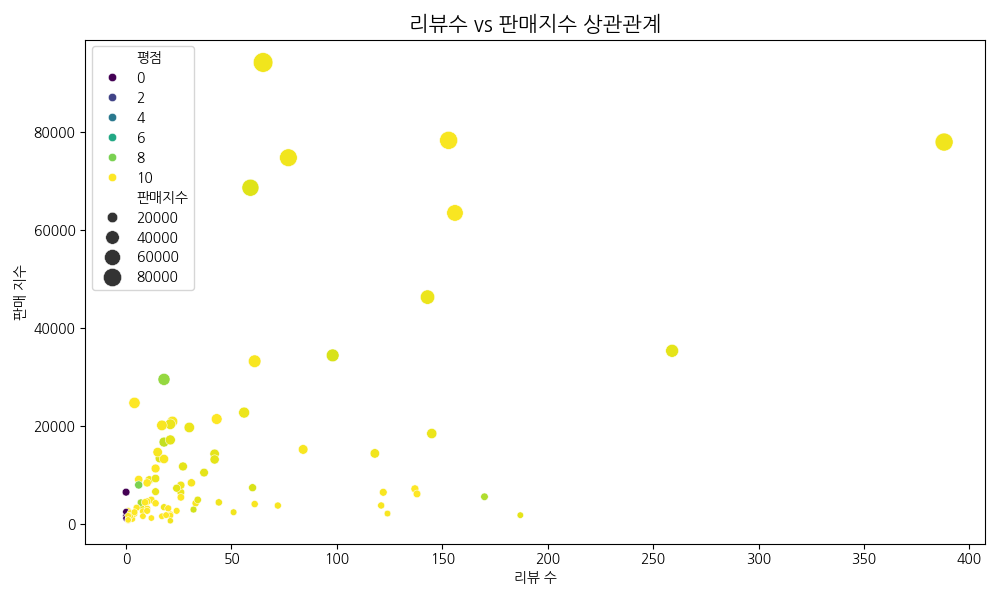

[전략 제안] IT 도서 시장 점유율 확대를 위한
데이터 기반 타깃 마케팅 및 큐레이션 전략
1. 분석 배경 및 목적
본 분석은 YES24 IT/컴퓨터 카테고리의 데이터를 정밀 진단하여, 구매 전환율(CVR) 극대화 및 마케팅 효율성(ROAS) 제고를 위한 의사결정 가이드라인 도출을 목적으로 합니다.
핵심 인사이트 요약 (Executive Summary)
- [Demand] AI·Python 등 DX 수요 중심의 키워드 선점은 유기적 유입 확보의 핵심 경로로 관찰됨.
- [Price] 입문자 시장의 높은 가격 민감도로 인해 1.5~2만 원의 스윗스팟 가격대가 초기 확산에 유리한 패턴을 보임.
- [Trust] 리뷰 지표는 성과 이후 누적되는 '후행 지표(Lagging Indicator)'이자 구매 확정을 돕는 사회적 증거로 해석됨.
2. 브랜드 신뢰도 및 경쟁 구도 분석

- 상위권 전문 출판사의 과점 현상은 독자들이 검증된 브랜드를 리스크 완화 수단으로 선택함을 의미합니다.
- **전략적 함의**: 신규 진입 시 전문 필진의 권위나 공신력 있는 커리큘럼을 강조하는 전략이 유효할 것으로 해석됩니다.
- **전략적 함의**: 신규 진입 시 전문 필진의 권위나 공신력 있는 커리큘럼을 강조하는 전략이 유효할 것으로 해석됩니다.
3. 키워드 분석: DX 수요 선점을 통한 유입 극대화

- 파이썬 관련 키워드의 압도적 비중은 비전공자의 DT 전환 트렌드가 결합된 결과로 해석됩니다.
- **마케팅 전략**: 2030 직장인 대상 '업무 자동화' 테마의 SNS 맞춤형 광고 집행 전략 적용이 권장됩니다.
- **마케팅 전략**: 2030 직장인 대상 '업무 자동화' 테마의 SNS 맞춤형 광고 집행 전략 적용이 권장됩니다.
4. 가격 전략: 시장 구조에 기반한 구매 허들 완화


- IT 도서 시장은 입문자 수요 비중이 커 가격 민감도가 매우 높게 형성되어 있습니다.
- **전략적 함의**: 1.5만~2만원대 가격 포지셔닝은 초기 진입 장벽을 낮추고 판매 성과를 견인하는 경향이 뚜렷합니다.
- **전략적 함의**: 1.5만~2만원대 가격 포지셔닝은 초기 진입 장벽을 낮추고 판매 성과를 견인하는 경향이 뚜렷합니다.
5. 독자 참여 지표의 재해석: 사회적 증거(Social Proof)

- 리뷰 수와 판매지수는 높은 연관성을 보이지만, 이는 '후행 지표(Lagging Indicator)'로서의 성격이 강한 것으로 관찰됩니다.
- **비즈니스 의미**: 리뷰는 판매를 결정하기보다 성과 이후 신규 구매자의 안심 구매를 돕는 자산으로 활용됩니다.
- **비즈니스 의미**: 리뷰는 판매를 결정하기보다 성과 이후 신규 구매자의 안심 구매를 돕는 자산으로 활용됩니다.
6. 성과 기여 요인 정밀 분석 (Ridge Regression)

[분석적 코멘트]
본 분석은 변수 간 관계를 설명하기 위한 것이며, 인과관계를 검증하기 위한 목적은 아님에 유의해야 합니다. 성과는 대중적 주제 선정과 가격 전략이 선행될 때 강화되는 경향을 보입니다.
본 분석은 변수 간 관계를 설명하기 위한 것이며, 인과관계를 검증하기 위한 목적은 아님에 유의해야 합니다. 성과는 대중적 주제 선정과 가격 전략이 선행될 때 강화되는 경향을 보입니다.
7. 📌 실행 전략 및 핵심 성과 지표(KPI) 제언
① [유입 증대] 최신 기술 키워드 전면 배치 캠페인
→ 검색 수요가 높은 키워드 최적화 및 타깃 광고 집행 전략 적용
목표 KPI: 검색 클릭률(CTR) 개선
② [전환 최적화] 입문자 타깃의 스윗스팟 가격 설계
→ 1.5~2만 원대 가격 포지셔닝을 통한 구매 장벽 완화 전략 실행
목표 KPI: 구매 전환율(CVR) 증가
③ [신뢰 구축] 장기적 신뢰 자산 확보 캠페인
→ 마이크로 인플루언서 협업을 통한 사회적 증거 누적 전략 실행
목표 KPI: 광고비 대비 매출액(ROAS) 개선
"신간 IT 도서 기획 시, 최신 기술 키워드 전략과 저가 포지셔닝(2만 원 이하)을 결합하는 것이 초기 판매 확보 및 베스트셀러 진입에 가장 유리한 전략으로 해석됩니다."